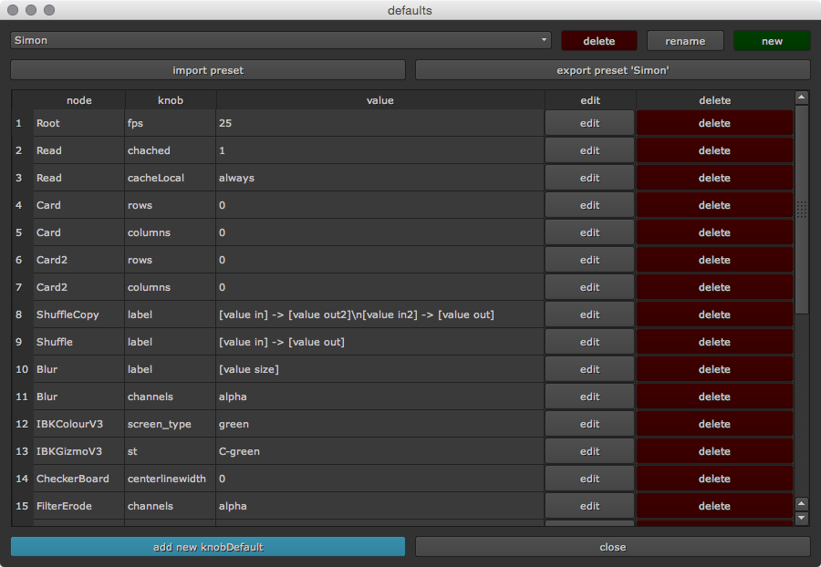

Main Window¶
The default main window lets you add, edit and delete knob defaults. To open the main window navigate to your menu bar and choose Scripts -> default -> defaults window. The default window will appear:
At the top of the window you can manage your presets. Knob defaults are bundled in preset lists and saved as xml files. The first time you launch default your preset list is called Custom. This is the initial preset list. I have added my personal presets list so you will already have some set up knob defaults. The presets live in the default installation folder the ‘presets’ sub directory. Simply switch the preset drop down from ‘Custom’ to ‘Simon’. Or in case it won’t be listed in the drop down click the import preset button, browse to your default installation, navigate to the ‘presets’ folder and import ‘Simon.xml’. Rename the preset list if needed.
You can create a new list by clicking the new button at the top right. You can also rename and delete a presets list. By creating several preset lists you can easily switch between multiple knob default setups - For instance for different artists. Or for a different show. You can also import and export preset lists and share them with other artists.
In the middle of the window you see a table that shows all knob defaults of the current preset. Here you can edit and delete your knob defaults.
To add a new knob default click the blue add new knobDefault button at the bottom left. The upcoming window will be discussed in the next section.